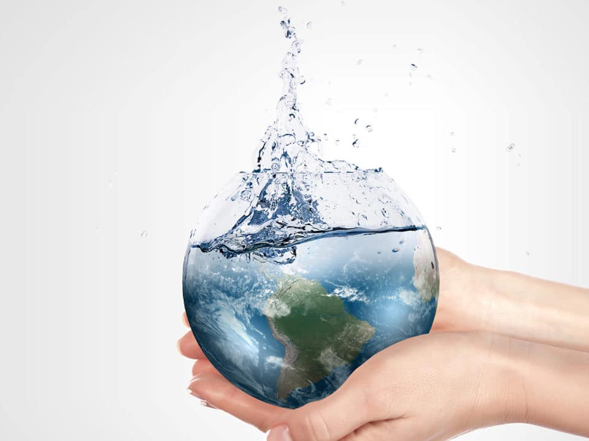

Apa saja cara membuat air menjadi bersih?
Edited by May 26th, 2024
Source Image: https://www.intelligentliving.co/6-clean-water/
Membuat air menjadi bersih dapat dilakukan melalui berbagai metode yang dirancang untuk menghilangkan kontaminan fisik, kimia, dan biologis. Berikut adalah beberapa cara utama untuk membersihkan air:
1. Penyaringan (Filtrasi)
Source Image: https://www.tzuchi.or.id/ruang-hijau/saringan-air-sederhana/15
Penyaringan adalah Teknik pengolahan air yang diterapkan dengan bantuan media filter seperti pasir atau mineral. Jenis pasir yang paling sering digunakan adalah pasir silika, Pasir silika memiliki fungsi untuk menghilangkan kandungan lumpur atau tanah dan sedimen pada air minum atau air tanah pada proses pengolahan air.
Untuk informasi lebih lanjut, dapat membuka artikel berikut: Alat Penjernih Air Sederhana Karya Mahasiswa KKN UNY
2. Distilasi
Source Image: https://www.tirtamandiri.com/proses-distilasi-dalam-menghasilkan-air-demineralisasi/
Memanaskan air hingga mendidih dan mengumpulkan uap yang dihasilkan, yang kemudian dikondensasi kembali menjadi air bersih. Proses ini efektif menghilangkan berbagai kontaminan termasuk mikroorganisme dan sebagian besar bahan kimia.
3. Reverse Osmosis (Osmosis Balik)
Source Image: https://byjus.com/chemistry/reverse-osmosis/
Menggunakan membran semi-permeabel untuk menghilangkan ion, molekul, dan partikel besar dari air. Proses ini sangat efektif dalam menghilangkan kontaminan kimia dan mikroorganisme.
4. Penambahan Bahan Kimia
- Penjernih Air : Menggunakan bahan kimia seperti tawas atau polielektrolit untuk mengumpulkan partikel kecil sehingga bisa diendapkan atau disaring lebih mudah.
- Penambahan Klorin atau Tablet Pemurni Air : Tablet pemurni air yang mengandung klorin atau yodium dapat ditambahkan untuk mendisinfeksi air dalam situasi darurat.